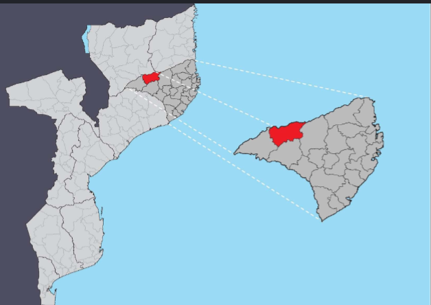
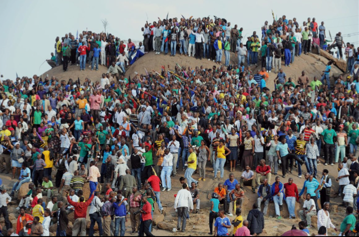
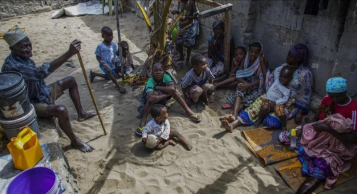
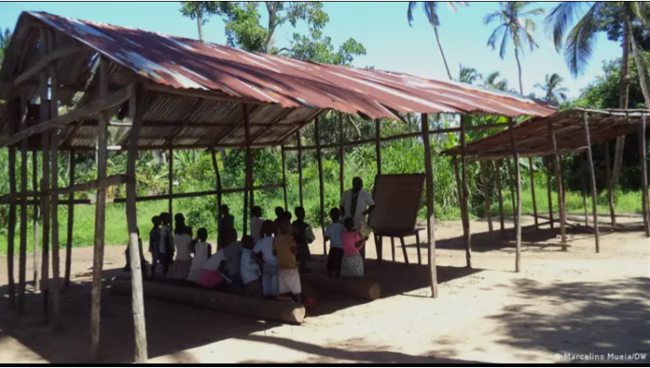
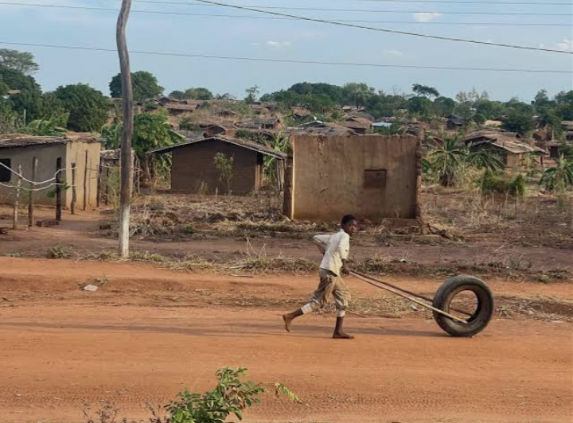
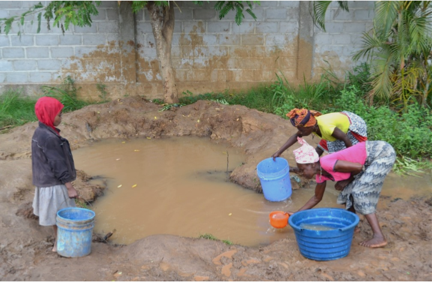
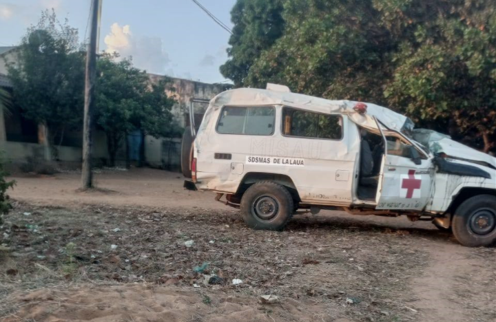
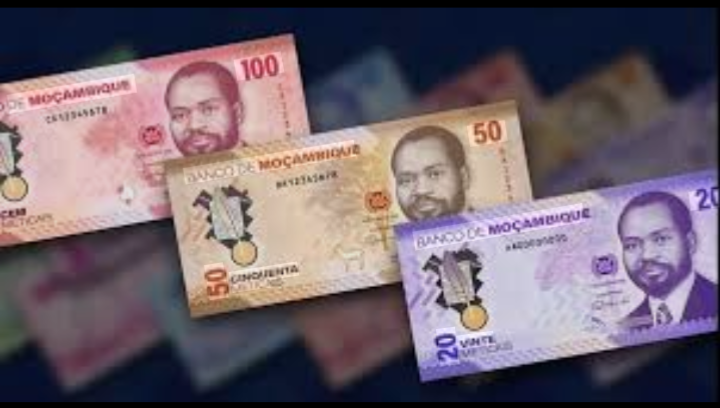
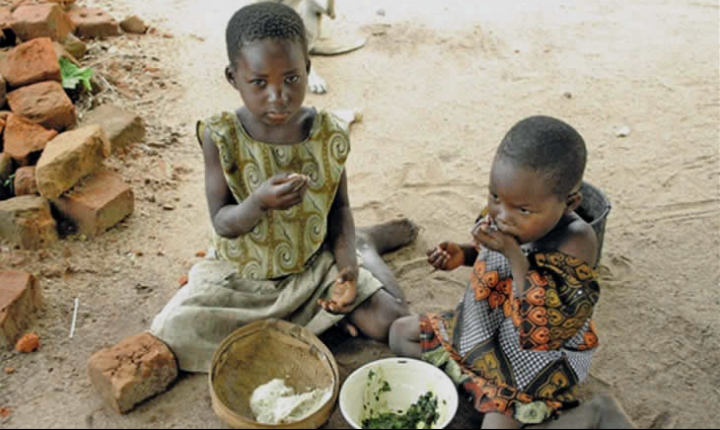
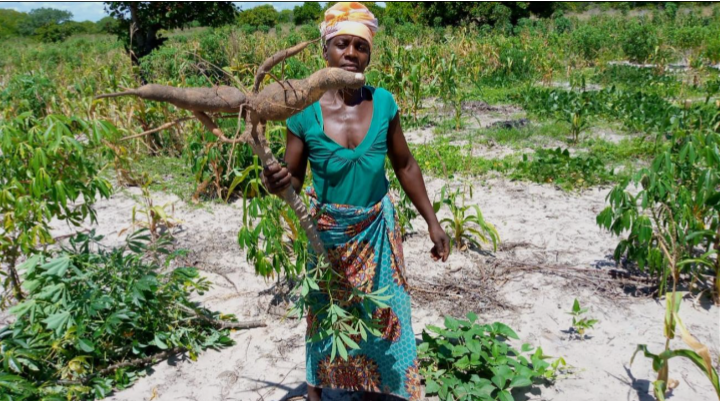

O Projecto METI SOLIDÁRIO
O METI SOLIDÁRIO é uma iniciativa social sem fins lucrativos criada com o propósito de divulgar a realidade do Posto Administrativo de Meti, localizado no distrito de Lalaua, província de Nampula, Moçambique.
O Projecto nasceu da vontade de aproximar pessoas de diferentes partes do mundo da realidade vivida pelas comunidades locais, incentivando a solidariedade, a partilha de conhecimento e o apoio a iniciativas que contribuam para melhorar as condições de vida da população.
Através deste site, qualquer pessoa pode conhecer a história, a cultura, os desafios e as potencialidades de Meti. O nosso objetivo é transformar informação em ação, sensibilizando cidadãos, empresas, organizações e parceiros para colaborarem no desenvolvimento da comunidade.
O METI SOLIDÁRIO pretende também promover a transparência. Por isso, disponibiliza informações sobre os projetos prioritários, as campanhas em curso, as formas de apoio disponíveis e a prestação de contas das iniciativas desenvolvidas.
As áreas de atuação incluem, entre outras:
- Promoção do acesso à água potável;
- Apoio à educação e melhoria das escolas;
- Fortalecimento dos serviços de saúde;
- Combate à insegurança alimentar;
- Incentivo ao desenvolvimento comunitário sustentável.
Mais do que um simples site, o METI SOLIDÁRIO pretende ser uma ponte entre quem deseja ajudar e uma comunidade que acredita num futuro melhor.
Nas secções seguintes apresentamos uma visão geral do Posto Administrativo de Meti, permitindo conhecer melhor a sua população, a sua realidade e as oportunidades de desenvolvimento existentes.
POSTO ADMINISTRATIVO DE METI
O Posto Administrativo de Meti está localizado no distrito de Lalaua, na província de Nampula, norte de Moçambique.
É uma região predominantemente rural, conhecida pela riqueza da sua cultura, pelo espírito trabalhador da sua população e pelo grande potencial para o desenvolvimento agrícola e social.
Apesar das suas potencialidades, a comunidade enfrenta diversos desafios relacionados com o acesso à educação, aos serviços de saúde, à água potável e a melhores condições de vida.

Mapa ilustrativo sobre a localização do Posto Administrativo de Meti.
O METI SOLIDÁRIO procura dar visibilidade a esta realidade, promovendo a solidariedade e incentivando iniciativas que contribuam para o desenvolvimento sustentável da região.
O Posto Administrativo de Meti ocupa uma área aproximada de 2.651 km², sendo um dos principais postos administrativos do distrito de Lalaua.
Meti possui duas localidades, nomeadamente: NAQUESSA e NIOCE. Possui também as comunidades de Nauauane, Cahique, Munheuene, Naculue, Mucú, Mutumar, Bloco de Produção, Riráuè e outras.
População
Segundo o Censo Geral da População e Habitação de 2017, o Posto Administrativo de Meti possui mais de 128.465 habitantes, distribuídos por diversas comunidades rurais.
As projeções indicam que a população poderá ultrapassar 136 mil habitantes até 2030, refletindo um crescimento contínuo.

Habitantes do Posto Administrativo de Meti durante um momento de convívio comunitário.
A densidade populacional é de aproximadamente 15 habitantes por quilómetro quadrado, característica típica de regiões predominantemente rurais.
Estrutura Etária
Meti possui uma população bastante jovem. Cerca de 47% dos habitantes têm menos de 15 anos de idade, o que demonstra a importância de investir na educação, saúde e criação de oportunidades para as novas gerações.
O índice de masculinidade ronda os 49%, indicando um ligeiro predomínio da população feminina.
A maior parte da população encontra-se em idade ativa, constituindo um importante recurso para o desenvolvimento económico e social da região quando existem oportunidades adequadas de educação, formação e emprego.

Pessoas reunidas em diferentes faixas etárias, desde crianças adolescentes, jovens, adultos e velhos.
Línguas Faladas
A língua materna predominante é o Emakuwa, sendo o principal meio de comunicação entre as comunidades.
O domínio da língua portuguesa ainda é reduzido. Estima-se que cerca de 77% da população com cinco ou mais anos de idade não fale português, situação que influencia o acesso à educação, à informação e aos serviços públicos.
O conhecimento da língua portuguesa é mais frequente entre os homens, devido à sua maior participação na escola, no mercado de trabalho e em atividades sociais.
Educação e Escolarização
A educação constitui um dos principais desafios para o desenvolvimento do Posto Administrativo de Meti. Embora tenham sido registados progressos ao longo dos anos, o acesso ao ensino continua limitado para uma parte significativa da população.
Estima-se que cerca de 82% da população seja analfabeta, sendo esta realidade mais evidente entre as mulheres.
Apenas 38% dos habitantes frequentam ou frequentaram a escola, demonstrando que ainda existe um longo caminho a percorrer para garantir uma educação acessível a todos.
A maior taxa de frequência escolar verifica-se entre as crianças dos 10 aos 14 anos, onde aproximadamente 45% frequentam a escola.
O grupo dos 5 aos 9 anos apresenta a segunda maior taxa de escolarização, indicando que muitas crianças iniciam os estudos mais tarde do que o recomendado.
Apesar dos esforços desenvolvidos, apenas 7% da população concluiu algum nível de ensino. Entre essas pessoas:
- Cerca de 92% concluíram apenas o ensino primário;
- Aproximadamente 5% concluíram o primeiro ciclo do ensino secundário.
O baixo nível de escolarização está relacionado com diversos fatores, entre os quais a insuficiência da rede escolar, o reduzido número de professores, limitações na formação pedagógica e dificuldades económicas enfrentadas por muitas famílias.

Aulas decorrendo numa sala inconvenciinal contribuindo para o baixo aproveitamento pedagógico e elevando a taxa de analfabetismo.
Estes fatores contribuem para o abandono escolar e para um baixo aproveitamento académico em várias comunidades.
A desigualdade no acesso à educação continua a afetar principalmente as mulheres.
Apenas 11% das mulheres possuem conhecimentos da língua portuguesa. Entre a população feminina, a taxa de analfabetismo ronda 94%, enquanto entre os homens é de aproximadamente 70%.
Cerca de 74% das mulheres com mais de cinco anos nunca frequentaram a escola, e apenas 9% concluíram o ensino primário.
A maior taxa de escolarização feminina verifica-se entre as raparigas dos 10 aos 14 anos, faixa etária em que cerca de 30% frequenta a escola.
Estes dados demonstram a necessidade de continuar a promover o acesso das raparigas à educação e de criar condições para que permaneçam na escola durante mais tempo.
Investir na educação das meninas representa um passo importante para o desenvolvimento sustentável da comunidade e para a redução da pobreza.
Habitação e Condições de Vida
Grande parte das famílias de Meti vive em habitações tradicionais construídas com materiais disponíveis localmente.
O modelo de habitação mais comum é a palhota, caracterizada por pavimento de terra batida, paredes de caniço ou paus e cobertura de capim ou colmo.

Habitações típicas das comunidades do Posto Administrativo de Meti.
O acesso a serviços básicos ainda é limitado. Muitas famílias não dispõem de eletricidade nem de outros equipamentos considerados essenciais no quotidiano.
A bicicleta continua a ser um dos principais meios de transporte para muitas famílias.
Em várias comunidades ainda existem habitações sem latrinas melhoradas, enquanto o abastecimento de água depende frequentemente de poços, furos, rios ou lagos.
A melhoria das condições habitacionais, do saneamento e do acesso aos serviços básicos constitui uma prioridade para o desenvolvimento da qualidade de vida da população de Meti.
Abastecimento de Água
O acesso à água potável continua a representar um dos maiores desafios enfrentados pelas comunidades do Posto Administrativo de Meti.
Atualmente, cerca de 31% da população obtém água através de poços e furos, enquanto aproximadamente 69% recorre diretamente a rios e lagos para satisfazer as necessidades diárias.

Muitas famílias continuam a recorrer a fontes de água não tratada.
Esta realidade aumenta o risco de transmissão de doenças de origem hídrica e demonstra a importância de investir na construção, reabilitação e manutenção de sistemas seguros de abastecimento de água.
Garantir água potável para todas as comunidades representa um passo fundamental para melhorar a saúde pública, a educação e a qualidade de vida da população.
Saúde e Ação Social
Os serviços de saúde disponíveis no Posto Administrativo de Meti ainda são insuficientes para responder às necessidades da população.
Em média, existe:
- Uma unidade sanitária para mais de 128 mil habitantes;
- Uma cama hospitalar para aproximadamente 3.600 habitantes;
- Um profissional de saúde para cerca de 2.100 residentes.

Estado da ambulância que era utilizada para o transporte de doentes outros Centros de Saúde.
Estas limitações dificultam o acesso aos cuidados médicos, sobretudo para as comunidades mais afastadas.
Na área da ação social, são priorizados os grupos mais vulneráveis, incluindo:
- Crianças órfãs;
- Mulheres viúvas;
- Pessoas idosas;
- Pessoas com deficiência;
- Doentes crónicos;
- Pessoas que vivem com HIV/SIDA;
- Famílias em situação de pobreza.
De acordo com dados disponíveis, existem aproximadamente 500 crianças órfãs, sendo cerca de 30% órfãs de pai e mãe.
Existem igualmente cerca de 3.000 pessoas com deficiência, incluindo deficiências físicas e limitações de natureza mental.
O fortalecimento dos serviços de saúde e da assistência social constitui uma das prioridades para melhorar o bem-estar da população.
Economia e Orçamento Familiar
A economia do Posto Administrativo de Meti baseia-se principalmente na agricultura familiar e em pequenas atividades comerciais.
Grande parte das famílias depende da produção agrícola destinada ao autoconsumo, sendo que cerca de 65% do rendimento familiar corresponde ao valor dos produtos produzidos pelas próprias famílias e da utilização das suas habitações.
As despesas familiares concentram-se sobretudo em:
- Alimentação (cerca de 68%);
- Habitação, água, energia e combustíveis (aproximadamente 15%).
A distribuição do rendimento demonstra que muitas famílias vivem com recursos bastante limitados.
Estima-se que cerca de 60% dos agregados familiares possuam um rendimento mensal inferior a 1.000 Meticais.

A baixa renda familiar constitui a causa principal sobre a limitação na aquisição de produtos básicos para alimentação, higiene e saúde.
Segurança Alimentar e Estratégias de Sobrevivência
A segurança alimentar continua a ser um dos maiores desafios enfrentados pelas famílias do Posto Administrativo de Meti.
As alterações climáticas, períodos de seca, cheias ocasionais e a baixa produtividade agrícola afetam diretamente a produção de alimentos e os rendimentos das famílias.
Em média, as reservas familiares de cereais e mandioca são suficientes para cerca de 2,5 meses, tornando muitas famílias vulneráveis durante os restantes meses do ano.
Estima-se que cerca de 5% da população se encontre numa situação de maior vulnerabilidade alimentar, especialmente:
- Famílias de pequenos agricultores;
- Pessoas idosas;
- Agregados familiares chefiados por mulheres;
- Famílias com menores recursos económicos.

Crianças da comunidade de Meti, representando os desafios relacionados com a alimentação e o desenvolvimento infantil.
Durante os períodos de escassez de alimentos, muitas famílias recorrem a diferentes estratégias de sobrevivência, incluindo:
- Participação em programas comunitários de trabalho em troca de alimentos;
- Recolha de frutos silvestres;
- Produção e venda de lenha e carvão;
- Venda de caniço e estacas;
- Produção de bebidas tradicionais;
- Caça de subsistência;
- Trabalho temporário em localidades vizinhas.
Estas estratégias demonstram a capacidade de adaptação da população perante as dificuldades, mas evidenciam igualmente a necessidade de promover soluções sustentáveis que reforcem a segurança alimentar.
Agricultura e Desenvolvimento Rural
A agricultura constitui a principal atividade económica do Posto Administrativo de Meti e representa a principal fonte de alimentação e rendimento para a maioria das famílias.
Grande parte da produção é realizada por pequenos agricultores familiares, utilizando métodos tradicionais de cultivo.
Entre as culturas mais comuns encontram-se:
- Milho;
- Mandioca;
- Feijão;
- Amendoim;
- Mapira;
- Outras culturas alimentares adaptadas às condições locais.

A agricultura familiar continua a ser a principal atividade económica das comunidades de Meti.
O não posto dispõe de infraestruturas de irrigação e de algumas represas com potencial para apoiar a produção agrícola.
O investimento em técnicas agrícolas modernas, acesso a sementes melhoradas, formação dos agricultores e expansão dos sistemas de irrigação poderá contribuir significativamente para aumentar a produtividade, reduzir a pobreza e melhorar a segurança alimentar.
O Futuro de Meti
Meti possui um enorme potencial humano e natural.
A juventude da população, a disponibilidade de terras agrícolas e o forte espírito de trabalho da comunidade constituem importantes oportunidades para o desenvolvimento sustentável.
Com investimentos na educação, saúde, abastecimento de água, agricultura e infraestruturas, será possível melhorar a qualidade de vida das famílias e criar novas oportunidades para as futuras gerações.
O METI SOLIDÁRIO acredita que o desenvolvimento da comunidade depende da colaboração entre a população, as autoridades, parceiros de desenvolvimento, empresas e todas as pessoas que desejam contribuir para um futuro melhor.
Conclusão
Conhecer Meti é compreender tanto os seus desafios como as suas potencialidades.
Apesar das dificuldades enfrentadas diariamente, a comunidade demonstra resiliência, espírito de solidariedade e vontade de construir um futuro mais próspero.
O METI SOLIDÁRIO nasceu precisamente para aproximar pessoas, divulgar a realidade da comunidade e incentivar ações concretas que contribuam para melhorar as condições de vida da população.
Cada visita ao nosso site, cada partilha e cada gesto de solidariedade representam um passo importante para o desenvolvimento de Meti.
Juntos, podemos transformar desafios em oportunidades e construir um futuro mais digno para toda a comunidade.